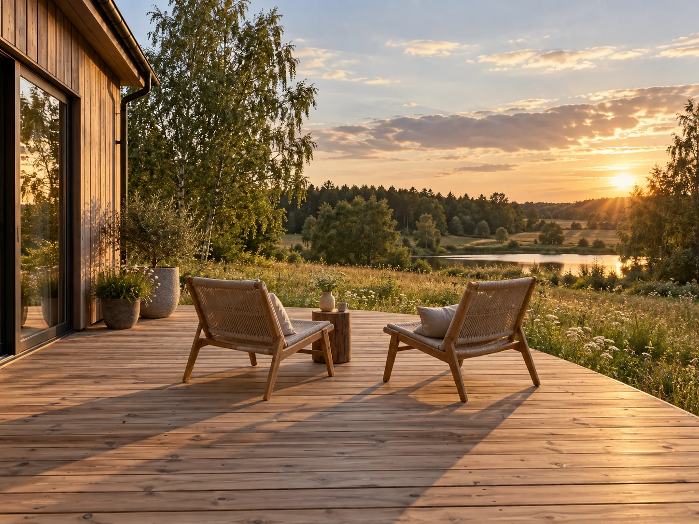
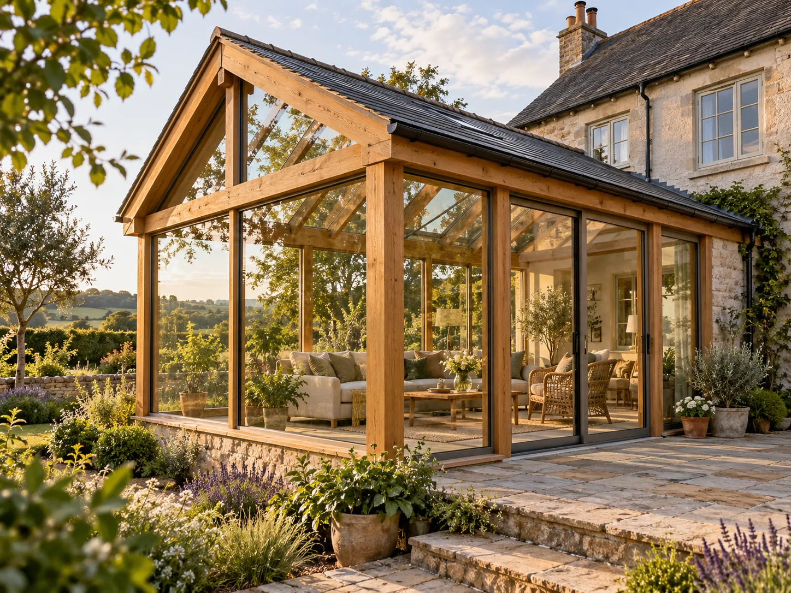
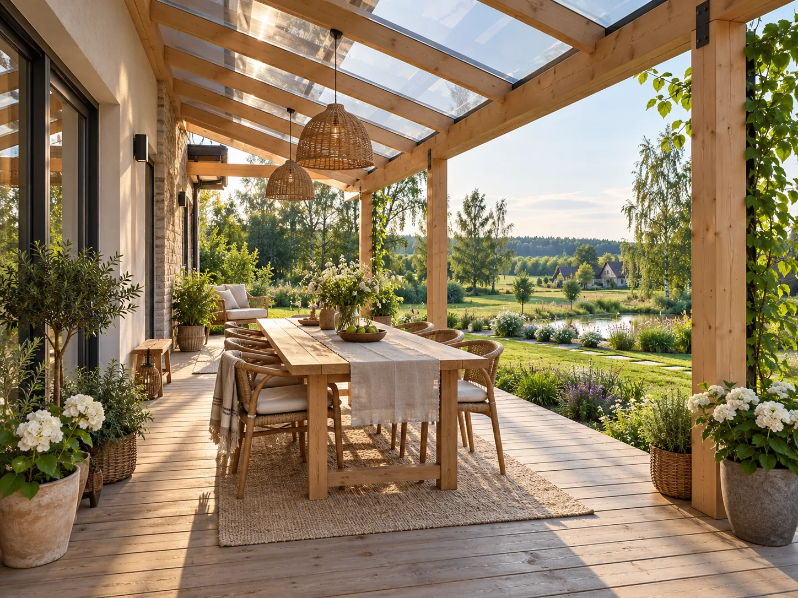

Деревянные террасы
и веранды в Минске.
Работаем с деревом и подбираем решение под пространство и задачу.
Деревянные террасы
Продолжение дома для отдыха, встреч и спокойных вечеров. Открытая терраса или пространство у входа — подбираем формат под ваш участок.
Посмотреть пример террасы в Instagram
Веранды
Защищённое пространство рядом с домом. Конструкцию и внешний вид обсуждаем индивидуально, исходя из ваших пожеланий.
Посмотреть работы мастерской в Instagram
Навесы
Деревянные конструкции для двора и зоны отдыха, которые сочетаются с архитектурой дома.
Посмотреть кровлю над террасой